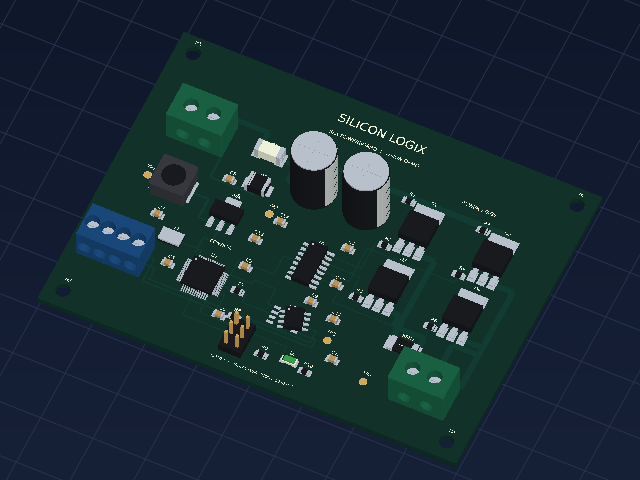

Model assembly-73df2f1c0216 · SHA-256 1ca2375dc963604619796ac7e241f884878e46b72fe08d318ad3198774d95564
Nominal reference / captured RGB · 640 × 480 · threshold 0.80

Defects: 1 · Review: 0 · Pass: 45. Scores are uncalibrated; hidden or visually symmetric parts require verification.
| CAD reference | Decision | Visual class | Score |
|---|---|---|---|
| J1 | PASS | Nominal | 100.0% |
| F1 | PASS | Nominal | 99.4% |
| D1 | PASS | Nominal | 99.9% |
| C1 | PASS | Nominal | 99.9% |
| C2 | PASS | Nominal | 99.9% |
| L1 | PASS | Nominal | 100.0% |
| U3 | PASS | Nominal | 100.0% |
| U1 | PASS | Nominal | 100.0% |
| U2 | PASS | Nominal | 100.0% |
| U4 | DEFECT | Position / appearance changed | 100.0% |
| Y1 | PASS | Nominal | 99.1% |
| J3 | PASS | Nominal | 100.0% |
| J4 | PASS | Nominal | 100.0% |
| J2 | PASS | Nominal | 100.0% |
| Q1 | PASS | Nominal | 99.8% |
| Q2 | PASS | Nominal | 99.8% |
| Q3 | PASS | Nominal | 99.8% |
| Q4 | PASS | Nominal | 99.8% |
| RSH1 | PASS | Nominal | 100.0% |
| D2 | PASS | Nominal | 99.9% |
| C3 | PASS | Nominal | 99.8% |
| C4 | PASS | Nominal | 99.9% |
| C5 | PASS | Nominal | 99.8% |
| C6 | PASS | Nominal | 99.9% |
| C7 | PASS | Nominal | 99.8% |
| C8 | PASS | Nominal | 99.8% |
| C9 | PASS | Nominal | 99.7% |
| C10 | PASS | Nominal | 99.8% |
| C11 | PASS | Nominal | 99.8% |
| C12 | PASS | Nominal | 99.8% |
| C13 | PASS | Nominal | 99.9% |
| C14 | PASS | Nominal | 99.8% |
| R1 | PASS | Nominal | 100.0% |
| R2 | PASS | Nominal | 99.9% |
| R3 | PASS | Nominal | 99.9% |
| R4 | PASS | Nominal | 99.9% |
| R5 | PASS | Nominal | 99.9% |
| R6 | PASS | Nominal | 99.9% |
| R7 | PASS | Nominal | 99.9% |
| R8 | PASS | Nominal | 99.8% |
| R9 | PASS | Nominal | 99.9% |
| R10 | PASS | Nominal | 100.0% |
| TP1 | PASS | Nominal | 99.9% |
| TP2 | PASS | Nominal | 99.9% |
| TP3 | PASS | Nominal | 99.9% |
| TP4 | PASS | Nominal | 99.9% |
Edit commands are recorded after inference and never used as recognition inputs.
[
{
"dx_mm": 1.7,
"dy_mm": 0.4,
"reference": "U4",
"removed": false,
"rotation_deg": 17
}
]
experiment.json stores asset/model identity and SHA-256 checksums. These checksums detect accidental changes; they are not a digital signature.